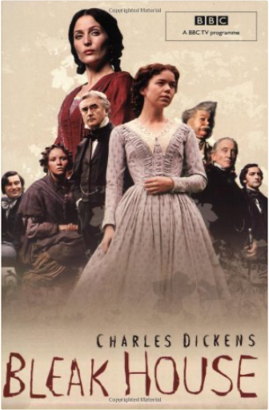
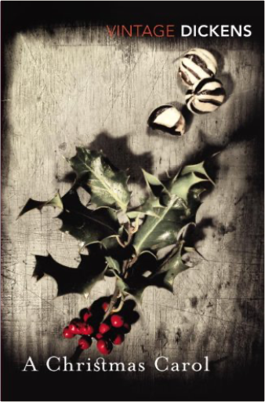
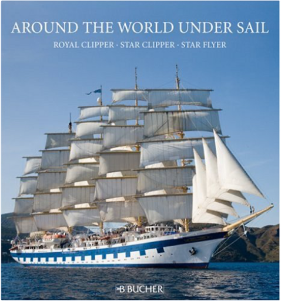

Bleak HouseCharles Dickens  Charles Dickens' great depiction of Victorian London, revolving around the case of Jarndyce and Jarndyce and laced with secrets, horrific crimes and love affairs, comes to the BBC this Autumn in a major new drama. A Christmas CarolCharles Dickens Marley's face. It was not in impenetrable shadow as the other objects in the yard were, but had a dismal light about it, like a bad lobster in a dark cellar. Ebenezer Scrooge is unimpressed by Christmas. He has no time for festivities or goodwill toward his fellow men and is only interested in money. Then, on the night of Christmas Eve, his life is changed by a series of ghostly visitations that show him some bitter truths about his choices. Dickens' most influential book is a funny, clever, and hugely enjoyable story. Hard TimesCharles Dickens, Kate Flint The 'terrible mistake' was the contemporary utilitarian philosophy, expounded in Hard Times (1854) as the Philosophy of Fact by the hard-headed disciplinarian Thomas Gradgrind. But the novel, Dickens's shortest, is more than a polemical tract for the times; the tragic story of Louisa Gradgrind and her father is one of Dickens's triumphs. When Louisa, trapped in a loveless marriage, falls prey to an idle seducer, the crisis forces her father to reconsider his cherished system. Yet even as the development of the story reflects Dickens's growing pessimism about human nature and society, Hard Times marks his return to the theme which had made his early works so popular: the amusements of the people. Sleary's circus represents Dickens's most considered defence of the necessity of entertainment, and infuses the novel with the good humour which has ensured its appeal to generations of readers. Around the World Under Sail: Royal Clipper, Star Clipper, Star FlyerSabine Driessle, Cord Christian Troebst A journey on board one of the legendary tall ship sailing |
 Made with Delicious Library
Made with Delicious LibrarySpringfield, State zipflap congrotus delicious library Doddridge, Edward